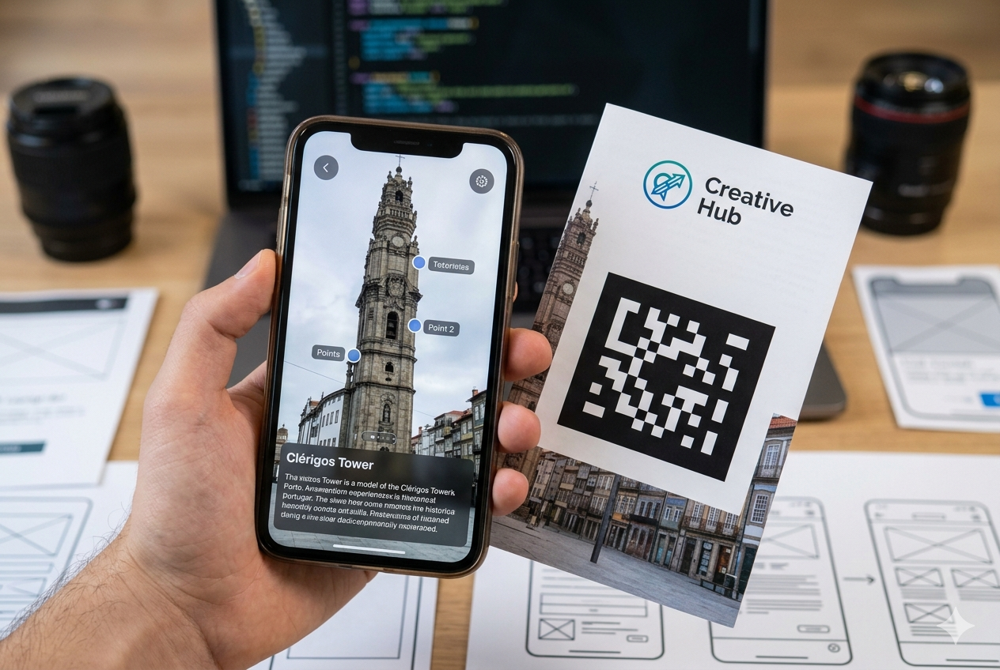

O meu projeto de PAP consiste num guia turístico interativo para a cidade do Porto, utilizando tecnologia de Realidade Aumentada (AR). Os utilizadores podem apontar o telemóvel para os principais monumentos (como a Torre dos Clérigos, na imagem) e ver informações históricas e animações 3D sobre o local. O objetivo é criar uma experiência de turismo imersiva e moderna. O design da app e a modelação 3D foram feitos no Blender e no Unity.